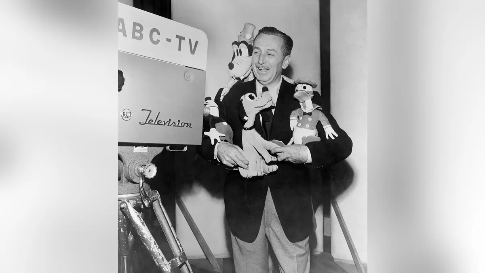

I originally came to MIT to study media (Comparative Media Studies). Ever since I was little, I have been fascinated with media and the history of different mediums of entertainment, creativity, and communication. In the dynamic evolution of media, the inception of Generative AI, to me, stands as a watershed moment, signaling an age where creative boundaries are not just crossed but entirely redefined.
To me, Generative AI is not merely a new tool in the media landscape, but a transformative force. It reimagines the very essence of content creation. Pair this with the interaction of spatial computing and augmentative media, and I think we are heading towards an explosive new paradigm. The world will become an infinite canvas of creativity.
Media’s journey from static to dynamic forms is a testament to technological advancement. Traditional media, evolving from text and illustrations to photographs to videos, has always been about layering and combining elements to create more immersive experiences. Each leap in media technology has historically been an augmentation of its predecessors, adding depth, movement, and interactivity. However, Generative AI represents a seismic shift in this trajectory. It transcends the mere combination of existing forms, introducing a realm where media is not only interactive but also self-evolving (alive?).
Embracing Cristobal Valenzuela (RunwayML)’s concept of Creative Software 2.0 and Alice Cai (Harvard Aug Lab)’s augmentation thesis, Generative AI emerges as a creative collaborator, an entity that not only assists but actively participates in the creative process. Here, AI is not a tool but a co-creator, capable of understanding and simulating the world. In this new era, the role of humans shifts from creators to directors and curators, guiding the AI in bringing visionary ideas to life. We will essentially become like Walt Disney. He had a vison and directed his films, but he rarely was the one drawing every single frame of animation.

Generative AI’s integration into spatial media heralds a future of unprecedented immersive experiences. Content will become an ever-changing tapestry, responsive to individual interactions and adaptable to personal preference in real-time. The potential for creativity is boundless: narratives that reshape themselves around the audience’s reactions, environments that morph in response to emotional cues, and experiences that are uniquely tailored to each individual.
Adopting an e/acc viewpoint, this is a revolution in how we conceive, interact with, and experience media. This technology propels us into an era where our imagination is the only limit. Generative AI elevates media from a passive form of consumption to an active form of co-creation. it democratizes complex artistic skill and that allows for better visualization of one’s creativity. The most successful creators in this new age will not be using AI entirely, but they will be using AI to visualize and refine their most imaginative and groundbreaking ideas. AI is a catalyst for bringing out the human element of any creative act.
As we stand on the cusp of this new era, we are not just witnessing the evolution of media but participating in the redefinition of creativity itself. The horizon is unbounded and the future of media is a canvas of limitless potential. Don’t be scared of AI. Instead, embrace it. What would Walt Disney imagine?